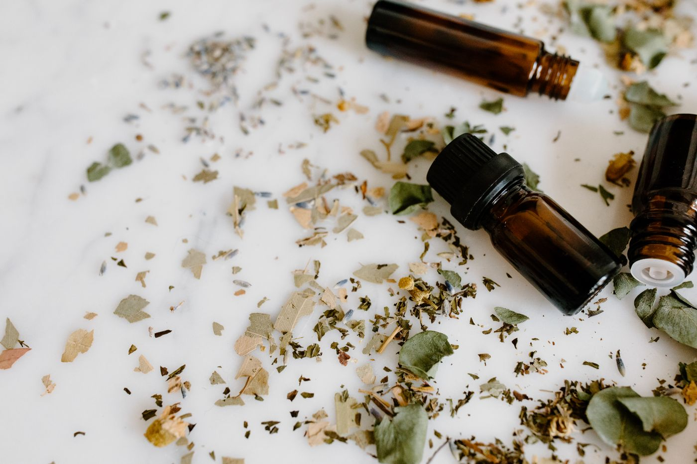
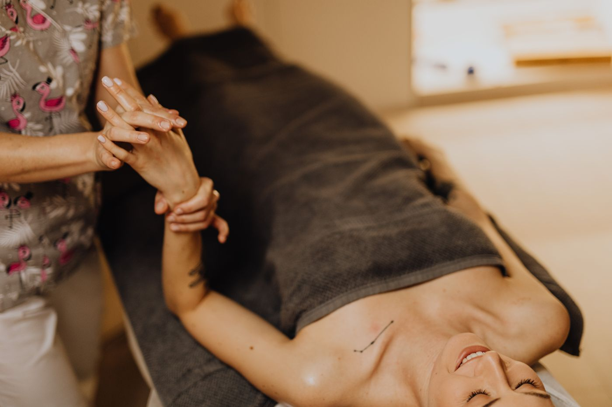

Procesos de dolor
Pérdidas, duelos, separaciones, etapas que se cierran. Un espacio sostenido para atravesar lo que duele sin apurar el tiempo y sin quedarte solo/a en el camino.
Puede empezar con una pregunta. Con una decisión. Con un pequeño paso. En Microcosmos® acompañamos procesos de cambio mirando a la persona completa: su historia, sus emociones, sus vínculos, su cuerpo y su propósito.
No creemos en las fórmulas mágicas.
Creemos en los pequeños cambios conscientes, porque muchas veces son esos
microcambios los que, sostenidos en el tiempo, pueden generar grandes transformaciones.
Muchas veces no necesitamos que alguien nos diga qué hacer. Necesitamos un lugar donde parar, comprender y recién ahí decidir. Acompañamos a personas que sienten que necesitan un cambio pero no saben por dónde empezar.
Pérdidas, duelos, separaciones, etapas que se cierran. Un espacio sostenido para atravesar lo que duele sin apurar el tiempo y sin quedarte solo/a en el camino.
Reconocer patrones que se repiten, entender de dónde vienen y ampliar la mirada sobre tu propia historia, tus vínculos y la manera en que interpretás lo que vivís.
Poner nombre a lo que sentís, entender para qué está esa emoción y aprender recursos concretos para habitarla sin que te maneje.
Decisiones más conscientes y hábitos nuevos para construir una vida con mayor coherencia entre quien sos hoy y quien querés llegar a ser.
Mi propósito no es decirte cómo tenés que vivir tu vida ni darte respuestas que solamente vos podés descubrir. Es acompañarte a hacerte preguntas, ampliar tu mirada y recuperar tus recursos internos.
Ana Carolina Rendón
Antes que proponerte nada, buscamos comprender tu propio microcosmos. Tocá cada dimensión para ver desde dónde la miramos.
Lo que viviste no se borra, pero sí se puede resignificar. Miramos tu historia para entender qué aprendiste ahí y qué de eso todavía está decidiendo por vos.
“¿Qué parte de tu historia seguís contando igual que hace diez años?”
Integramos disciplinas que permiten observar a la persona de una manera más amplia. No todas se usan siempre: se eligen según el momento que estás atravesando.

Aromaterapia, terapias manuales y reflexología se suman al proceso cuando pueden aportar al bienestar. El cuerpo también tiene algo para decir.

No hace falta esperar a la primera sesión para empezar. Seguí el círculo: inhalá cuando crece, exhalá cuando baja. Un minuto de respiración consciente ya modifica tu estado. Eso es un microcambio.
Creadora del Método Micronurosoma · Fundadora de Microcosmos® y Microcosmica®
Madre, mujer de fe y apasionada por el aprendizaje, el comportamiento humano y el desarrollo del SER. Dedicó su camino a explorar cómo la fe, el autoconocimiento, la conciencia y los pequeños cambios pueden transformar profundamente una vida, integrando espiritualidad y ciencia.
Su propia historia dio origen a este propósito. A pesar de convivir con una disminución visual severa y de haber atravesado experiencias que podrían haber sido devastadoras, encontró en ellas un impulso para reconstruirse, aprender y crear lo que hoy es Microcosmos®.
Porque aquello que parecía rompernos también puede convertirse en el comienzo de algo nuevo.
Contame en dos líneas qué te está pasando o qué te gustaría cambiar. No hace falta que lo tengas claro: para eso está el proceso.
Un encuentro para conocernos, entender tu momento y ver juntas si este acompañamiento es lo que necesitás ahora.
Definimos frecuencia, modalidad (online o presencial) y las herramientas que van a acompañarte. Después, los microcambios hacen lo suyo.
No. Es un acompañamiento de coaching y bienestar orientado al presente y a las decisiones que querés tomar. Es compatible con un tratamiento psicológico o médico, y cuando el caso lo requiere, lo derivo.
Las dos modalidades. Online por videollamada desde donde estés, o presenciales en Neuquén capital. Los procesos que incluyen terapias manuales o reflexología son presenciales.
Depende de vos y de lo que estés atravesando. Después de la primera conversación te propongo una cantidad estimada y la vamos revisando; nunca es un paquete cerrado que no se puede mover.
Los valores dependen de la modalidad y la frecuencia. Te los paso por WhatsApp junto con las formas de pago disponibles.
Sí. La mayoría llega sin experiencia previa y con la sensación de "algo tengo que cambiar, pero no sé por dónde". Ese es exactamente el punto de partida.